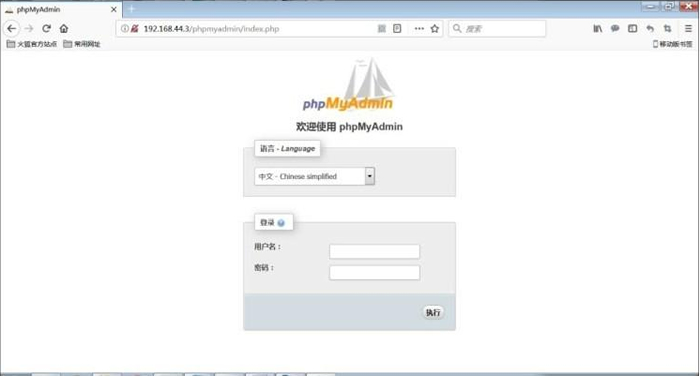
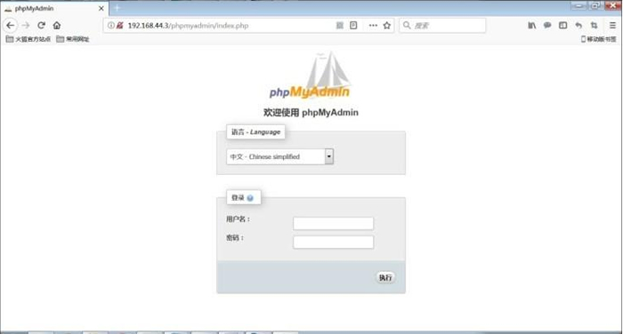

首页 > Linux > LAMP环境搭建和LNMP环境搭建
linux phpmyadmin安装及配置过程（超详细）
本节学习如何安装 phpMyAdmin，它是用 PHP 脚本写的 MySQL 数据库的管理软件，是使用 Web 图形模式直接管理 MySQL 数据库的工具。phpMyAdmin 可以用来创建、修改、删除数据库和数据表；可以用来创建、修改、删除数据记录；可以用来导入和导出整个数据库；还可以完成许多其他的 MySQL 系统管理任务。
对于不熟悉使用命令来进行数据库管理的管理者来说，phpMyAdmin 更加简单和方便。其实大家可以把 phpMyAdmin 当作使用 PHP 脚本写的一个项目，我们安装 phpMyAdmin 的方法可以套用到绝大多数 PHP 开源项目的安装上（其他 PHP 的开源项目在安装到 LAMP 环境中时，可能需要手工建立后台数据库结构和数据库表结构）。安装步骤如下。

图 1 phpMyAdmin 的 HTTP 身份验证
在登录对话框中输入 MySQL 的管理员“root”和我们刚刚安装 MySQL 时设定的密码“123”就能登录 phpMyAdmin了。
在 config.inc.php 中修改的内容如下：

图 2 phpMyAdmin的cookie身份验证
对于不熟悉使用命令来进行数据库管理的管理者来说，phpMyAdmin 更加简单和方便。其实大家可以把 phpMyAdmin 当作使用 PHP 脚本写的一个项目，我们安装 phpMyAdmin 的方法可以套用到绝大多数 PHP 开源项目的安装上（其他 PHP 的开源项目在安装到 LAMP 环境中时，可能需要手工建立后台数据库结构和数据库表结构）。安装步骤如下。
复制 phpMyAdmin 脚本文件
[root@localhost ~]# cp -r /usr/local/src/ phpMyAdmin-4.1.4-all-languages/usr/local/apache2/htdocs/phpmyadmin
#改名复制phpMyAdmin到apache的默认网页目录中
[root@localhost ~]# cd /usr/local/apache2/htdocs/phpmyadmin/
#进入phpmyadmin目录
[root@localhost phpmyadmin]# cp config.sample.inc.php config.inc.php
#复制配置模板文件为真正的配置文件
修改 phpMyAdmin 的验证方式
phpMyAdmin 默认识别 3 种验证方式：- HTTP 身份验证：调用apache的加密目录模块，在用户登录时，弹出登录窗口，需要输入正确的用户名和密码才能正常登录；
- cookie 身份验证：是HTTP身份验证模式的补充，不能使用HTTP身份验证模式的场合都可以使用它，它要求用户必须允许来自phpMyAdmin的cookie进入自己的计算机，即用户需要在浏览器中开启客户端的cookie功能；
- config 身份验证：客户端在登录时不再需要输入用户名和密码，就可以直接登录，因为用户名和密码是用明文方式写入config.inc.php配置文件的，所以这种验证方式并不安全，不推荐使用；
1) HTTP身份验证配置
要想使用 HTTP 身份验证，只需要修改 PHP 的配置文件 config.inc.php，把验证方式改为“http”即可。命令如下：
[root@localhost phpmyadmin]# vi config.inc.php
把 $cfg['Servers'][$i]['auth_type'] = 'cookie';
改为 $cfg['Servers'][$i]['auth_type'] = 'http';
图 1 phpMyAdmin 的 HTTP 身份验证
在登录对话框中输入 MySQL 的管理员“root”和我们刚刚安装 MySQL 时设定的密码“123”就能登录 phpMyAdmin了。
2) cookie身份验证
如果想让 phpMyAdmin 使用 cookie 身份验证模式，除必须修改 config.inc.php 文件里的 auth_type 语句外，还必须向 blowfish_secret 参数提供一个字符串。这个字符串可以是任意的，目的是在把登录时使用的用户名和密码存储在客户端的 cookie 中之前，系统将使用这个字符串对它们进行加密。在 config.inc.php 中修改的内容如下：
[root@localhost phpmyadmin]# vi config.inc.php
$cfg['blowfish_secret'] = 'c.baincheng.net'; /* YOU MUST FILL IN THIS FOR COOKIE AUTH！*/
#这里可以写任意字符串
#在PHP中，/* */代表注释一段话
$cfg['Servers'][$i]['auth_type'] = 'cookie';
#把验证方式改为cookie

图 2 phpMyAdmin的cookie身份验证
关注公众号「站长严长生」，在手机上阅读所有教程，随时随地都能学习。内含一款搜索神器，免费下载全网书籍和视频。

微信扫码关注公众号